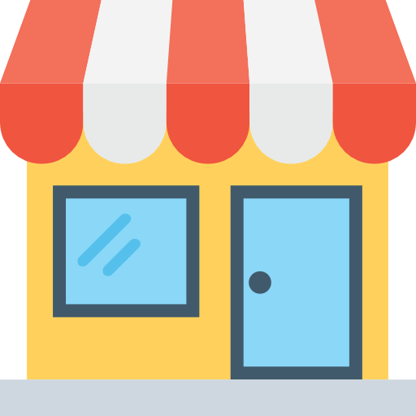

<mat-toolbar >
  <mat-toolbar-row>
    <div style="display: flex; justify-content:space-around;align-items: center;width: 100%;">

    <div class="w-50 d-flex align-items-center justify-content-start">
      
      <span class="h5 mx-3 mt-1">{{headerTitle}}</span>
      <button mat-icon-button class="example-icon" (click)="drawer.toggle()"  aria-label="Example icon-button with menu icon">
        <mat-icon>menu</mat-icon>
      </button>
    </div>
    <div class="w-50 text-end d-flex justify-content-end align-items-center">
     <button class="btn btn-danger btn-sm" (click)="logout()">Log Out</button>
      
    </div>
   
  </div>

  </mat-toolbar-row>
  </mat-toolbar>

<mat-drawer-container>
  <mat-drawer #drawer mode="side" [opened]="sideBarOpen" role="navigation"  style="background-color: transparent;border: 0;">
    <app-sidebar></app-sidebar>
  </mat-drawer>

  <mat-drawer-content color="primary">
    <router-outlet></router-outlet>
  </mat-drawer-content>

</mat-drawer-container>
